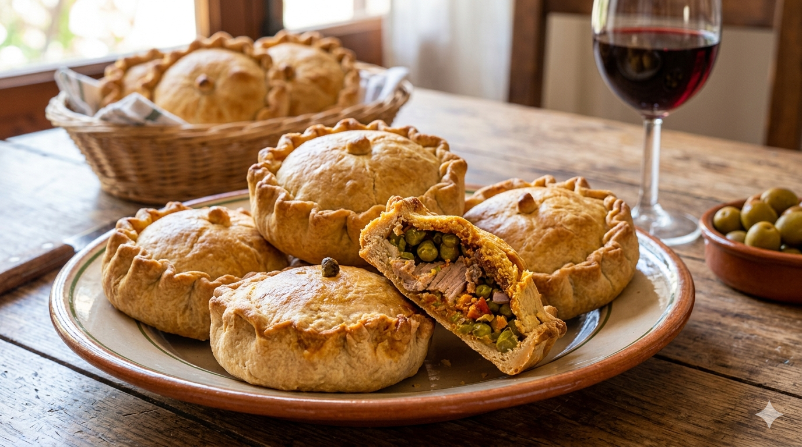

Panades Mallorquines
Home

Description:
Panades are traditional Mallorcan meat pies, also typically made during Easter alongside Rubiols.
They are small, round, open-topped pastries filled with lamb or pork. Crispy and golden on the outside with a juicy,
seasoned filling, they are a staple of Mallorcan celebrations and family gatherings.
Ingredients:
- 500g plain flour
- 150g lard
- 150ml warm water
- 1 teaspoon salt
- 500g lamb or pork, cut into small cubes
- 1 teaspoon paprika
- 1 teaspoon black pepper
- 1 teaspoon salt
- Fresh parsley, chopped
- Olive oil
Steps
- Mix the flour and salt in a large bowl, then add the lard and rub it in until it resembles breadcrumbs.
- Gradually add the warm water and knead until you have a smooth, firm dough.
- Let the dough rest for 30 minutes.
- Season the meat with paprika, black pepper, salt, parsley and a drizzle of olive oil. Mix well.
- Divide the dough into equal balls. Take each ball and flatten it, then shape the edges up to form a small cup.
- Fill each cup generously with the seasoned meat.
- Fold and pinch the edges inward slightly, leaving the top open.
- Bake at 180°C for about 45 minutes until golden and the meat is cooked through.
- Serve warm or at room temperature.